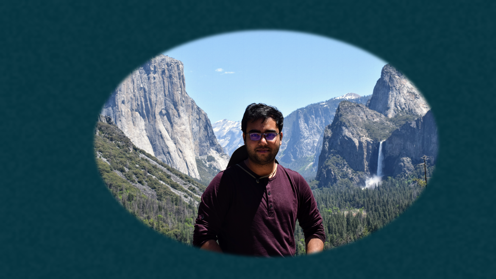

Hi and welcome to my website!
I am a postdoctoral scholar working with Prof. Andrej Sali at UCSF. I develop integrative structural models of large macromolecular protein complexes (mostly) using chemical crosslink data. As a part of the Pancreatic Beta Cell Consortium (PBCC) (a large cross-functional team of experimentalists and modelers across the US west (UCSF, USC, UCLA, Scripps, Salk) and the east (Rutgers) coasts, Montreal (Universite de Montreal) and Sanghai (iHuman Institute at SanghaiTech), committed to developing models of the entire pancreatic beta cell in eukaryotes), I also build bayesian toolchains for multi-representation modeling to enable coherent whole-cell model construction from separate disparate models.
I completed my PhD in Chemical Engineering with a minor in Computational Science and Engineering from UCSB in 2018, supervised by Prof. M. Scott Shell. In my thesis, I developed novel coarse-grained models of liquid mixtures, polymers and protein folding for efficient (~30-100 times faster than detailed atomistic representation) molecular dynamics (MD) simulations, while retaining thermodynamic accuracy.
Please feel free to reach out, if you have questions or comments about my research or want to collaborate.